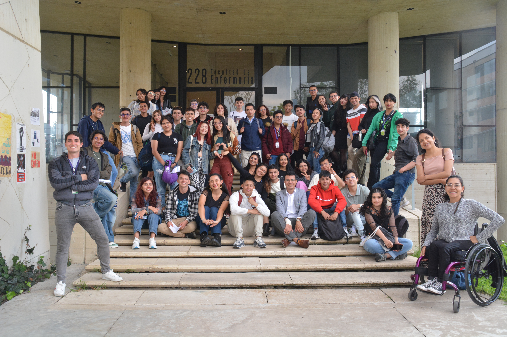
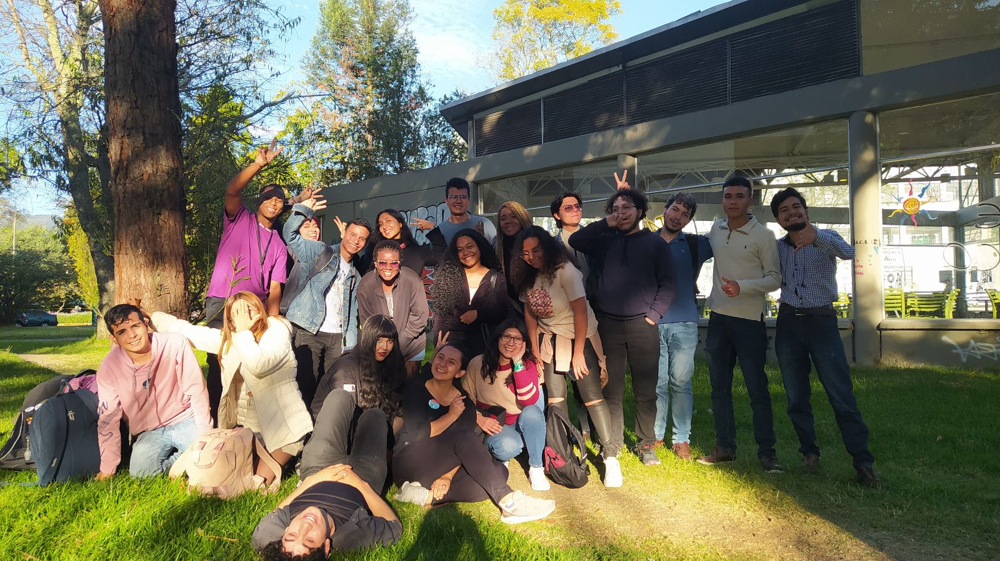
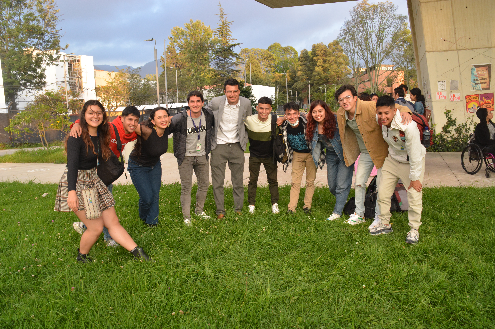
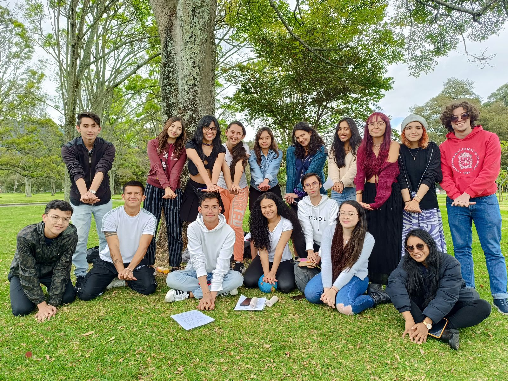
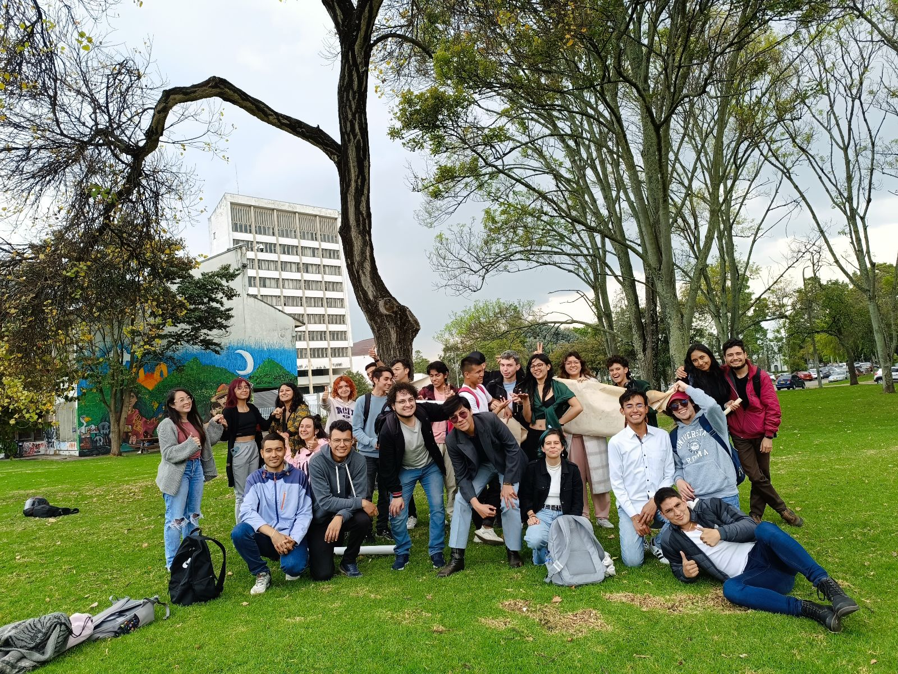
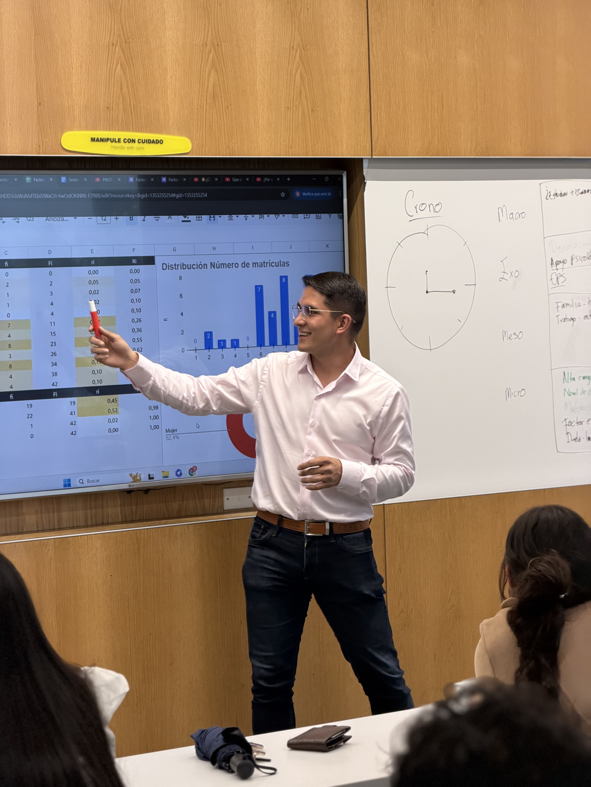
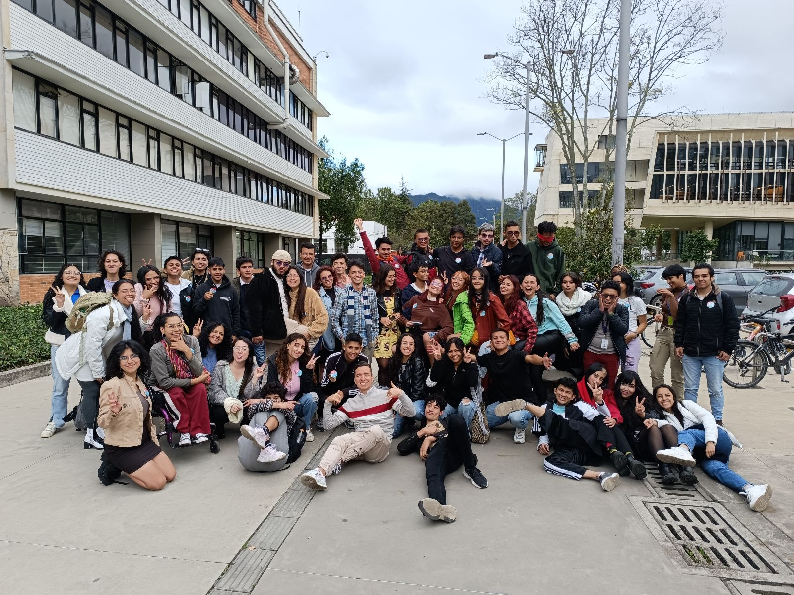
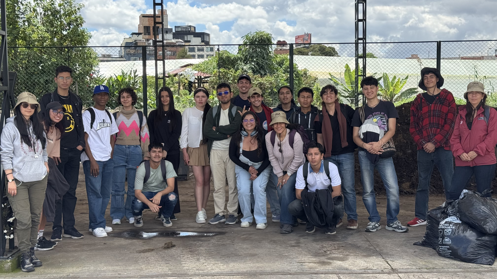
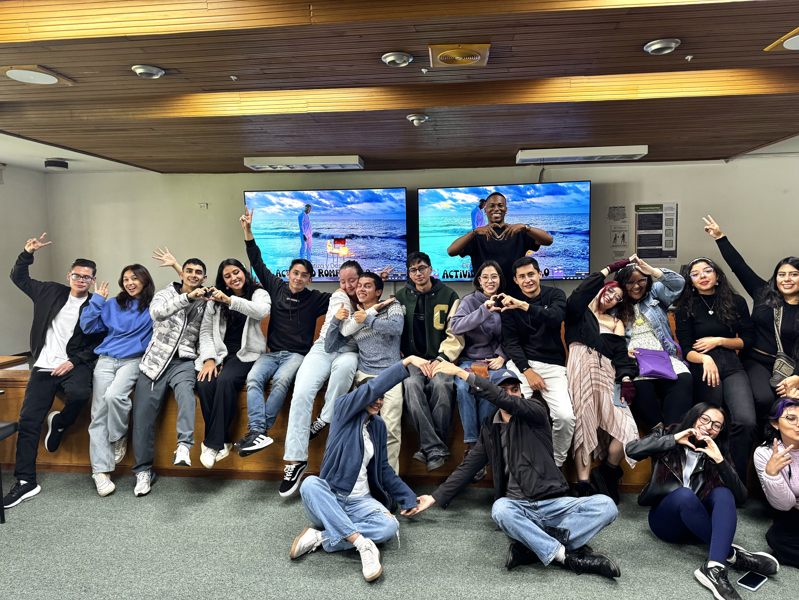
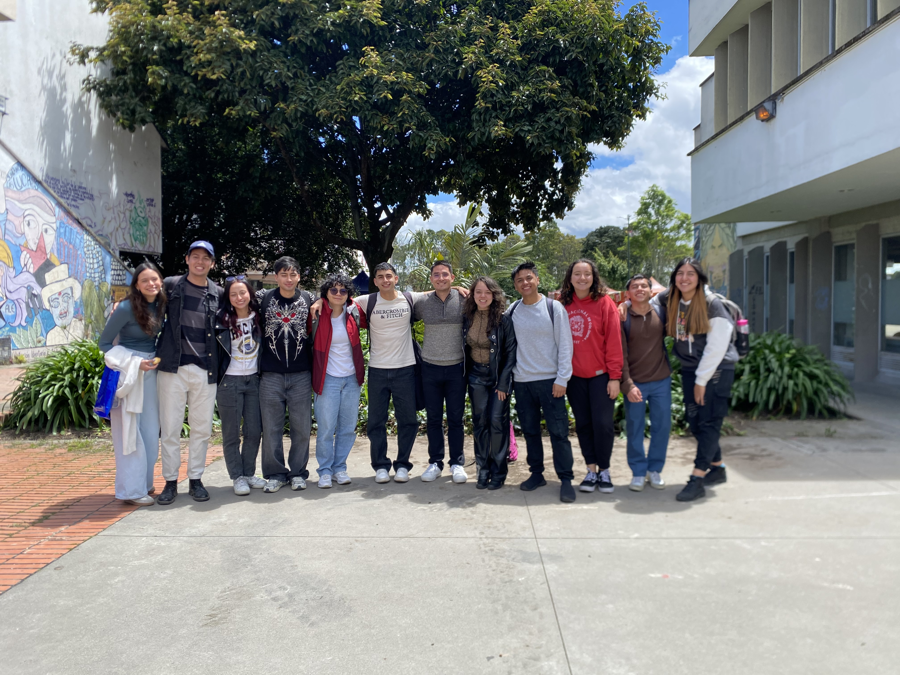

¿Quiénes Somos? — REDai
La Red Estudiantil de Acompañamiento Integral (REDai) es una estrategia de liderazgo del Área de Acompañamiento Integral de la Sede Bogotá. Desde 2017, impulsa iniciativas gestionadas por estudiantes para fortalecer la permanencia formativa, enriquecer la experiencia en los campus y nutrir el perfil profesional de nuestra comunidad universitaria.
 Iniciativa unLEMA
Iniciativa unLEMA
¿Quiénes Somos? — unLEMA
unLEMA es un equipo especializado de REDai encargado de complementar de manera activa los programas de Proyección Profesional y Preparación para el Cambio. Nos enfocamos en investigar, medir e interpretar las expectativas reales de los estudiantes de la Universidad Nacional frente a su egreso, tendiendo puentes entre sus necesidades y el apoyo institucional.